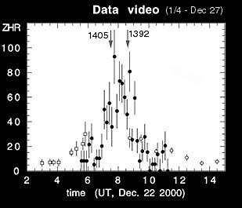

First analysis of the flux measurements during this year's Leonids show all dust trail encounters as predicted by the current shower models. Not only is the timing close to observed value, but also the level of activity is much as predicted. This gives further support to similar predictions for November 2001 and 2002, when meteor storms of 6,000-7,000 Leonids/hr peak rates are predicted as compared to 3,700 Leonids/hr for the 1999 storm.
|  |
The shower was observed by us from California, using video imaging and spectroscopy techniques. Present were Peter Jenniskens, Ming Li and Duncan McNeill at a site near Parkfield, and Pete Gural, Mike Koop, Mike Wilson, and Chris Angelos at the San Antonio Lake campground near King City. Local weather allowed observations between about 5:40 and 11:00 UT. Results await data analysis, however several relatively bright Ursids were seen (magnitude +1 to -1), some of which may have been recorded by the low-resolution spectrograph. A zero magnitude Ursid left a half-second duration wake. Six intensified cameras at each site recorded the variation of flux and Ursid light curves. Some very minimal visual observations between operations of equipment are reported below and suggest a ZHR of about 50 half an hour after the peak, comparable to the Perseid shower in summer.
Observations of the December 22 Ursid outburst show that the relatively fresh ejecta of comet 8P/Tuttle bear much resemblance in morphology to the similarly fresh Leonid storm dust of comet 55P/Tempel-Tuttle. Both show an early release of sodium atoms, relative to magnesium atoms, thought to be caused by a falling appart in many fragments after entering the Earth's atmosphere and thus exposing volatile minerals.
More 2000 Leonid reports:
http://leonid.arc.nasa.gov/live.html
More 2001 Ursid reports:
http://leonid.arc.nasa.gov/leonidnews29.html